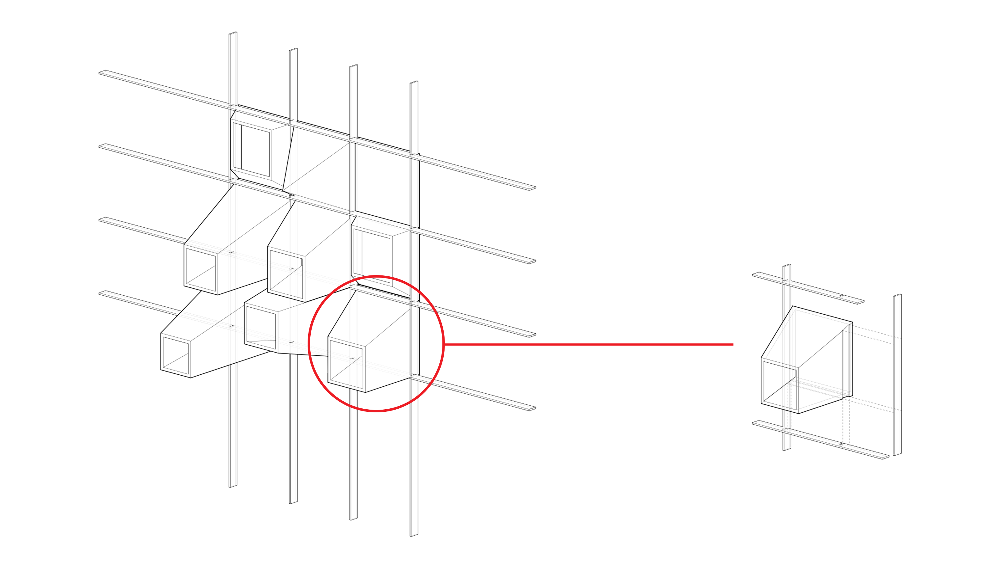

The Process
[ 1 ]
Early design sketchens and inspiraiton show the intentions of the tile design.
[ 2 ]
Custom mixed porcelain was used for spekcific color traits and firing properties.
[ 3 ]
Handmade plaster molds allow for complete control throughout the process and limitless rexact eproductions of the tile to be easily crafted.
[ 4 ]
Tiles are cleaned up and ready to be fired.
[ 5 ]
The final tiles are then assembeled into a custom welded metal frame to present as a full scale mock up of the proposed construciton.